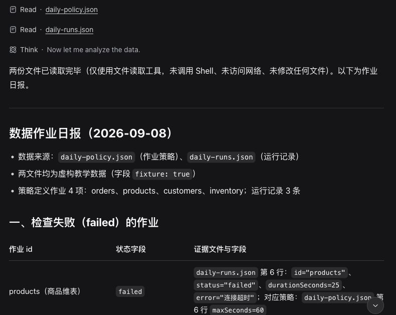
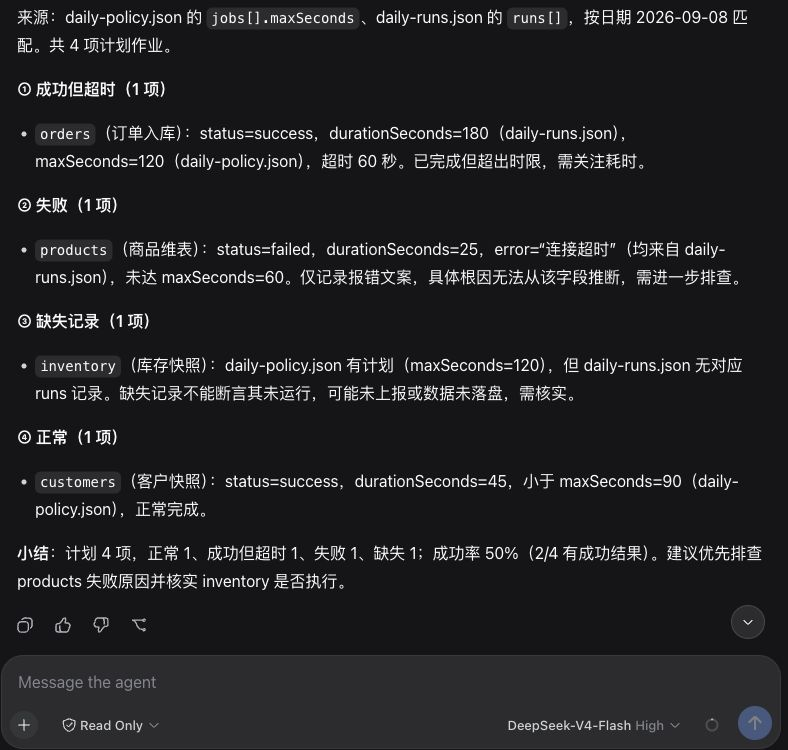

第二版重写样章 · 从一份作业日报开始
本页是重写中的前两章，不是完成版。
早上打开调度平台，你看到一批夜间作业。大多数成功了，有一个失败，还有几个比平时慢。发日报并不难，麻烦的是把这些信息讲准确：哪些需要处理，依据是什么，还缺什么材料。
我们就从这件事开始。全书会逐步做出一个助手：它读取当天的作业记录，按约定规则找出需要关注的项，写出报告；你还能继续问它某项判断依据来自哪里。后面再把固定检查封装成插件，让下一次运行沿用相同规则。
教学文件是虚构样本，不连接公司的调度平台。先在本地把流程弄明白，再考虑接入真实系统。这样即使操作出错，也不会重跑生产任务或给同事发送一份错误报告。
如果每天只需要把一列数字相加，我会写脚本。结果稳定，调度方便，也不需要付模型调用费。
日报里也有适合脚本的部分：按规则比较耗时、列出失败状态、检查预期作业是否都有记录。这些工作不应该每次由模型重新猜一套标准。
模型更适合承担另一部分工作。它可以把检查结果组织成读得懂的报告，结合补充材料回答追问，也可以根据任务选择已经提供的工具。例如，你问“这个失败影响了哪些下游”，助手需要找到依赖资料，而不是继续计算平均耗时。能否回答，取决于我们是否给了资料和可用工具；没有这些材料时，正确的回答就是说明缺少什么。
本书会保留这个分工：固定规则交给代码，材料组织和交互交给模型。这样既能利用模型，也方便检查它的答案。
模型服务接收输入，返回文字或工具调用请求。它不会因为读到一句“打开文件”，就自动获得你电脑上的文件。
Harness 是让这个过程实际运行起来的程序。它向模型说明有哪些工具，接收工具调用，执行相应操作，再把结果交回模型。它也管理会话和执行过程。DeepSeek Harness 把许多这样的能力做成插件，文件读取、模型接入以及驱动任务的循环可以由不同部件提供。
现在不必记插件目录和接口名称。第一次任务只需要理解：模型决定请求什么操作，工具完成具体操作，Harness 负责把它们接起来。结果是否可信，我们还要根据输入和执行记录检查。
直接聊天也能帮你分析粘贴进去的记录。差别在于，本书要让助手通过工具读取工作区中的材料，而不是每次手工复制整份文件。当任务开始涉及多份材料、重复检查和继续追问，执行环境与工具管理才显得有用。
样本分成两个文件。一份说明今天应该观察哪些作业、每个作业的耗时阈值；另一份是当天导出的结果。阈值由我们显式约定，不让模型凭感觉判断“慢”。
约定检查四个作业：订单入库、商品维表、客户快照和库存快照。当天文件中有前三个，库存快照没有记录；商品维表失败；订单入库成功，但耗时超过阈值；客户快照正常。
报告需要把这些情况分开。找不到库存快照的记录，不等于它一定没运行，也可能是导出漏了。订单入库超过阈值，不等于已经证明源数据库慢。商品维表返回错误摘要，也不足以替代完整日志。
我们希望得到这样的内容。下面是人工制定的验收样例，不是模型实际输出：
今日有三项需要关注。订单入库成功，耗时 180 秒，超过约定的 120 秒阈值；商品维表失败，记录中的错误摘要为连接超时；库存快照没有出现在本次导出中，需要核对调度记录或导出范围。客户快照成功，耗时 45 秒，未超过 90 秒阈值。当前材料不足以确定连接超时的根因。
这段话不花哨，但每一句都能回到某条记录或规则。后面换模型、加插件，仍按同一份要求检查。
下一步，我们会准备两个 JSON 文件，启动 Harness，选定只读工作区，让它读取材料并生成第一份报告。先在会话里查看报告，不急着授予写权限。等读取和判断稳定了，再允许它保存文件。
任务跑通以后，才回头看模型与工具之间发生了什么。那时学习会话、插件和执行循环，是为了理解刚才完成的工作，而不是记一串还用不上的术语。
完成全书后，读者应能安装并使用 Harness 完成本地任务，把固定检查写成插件，并沿执行记录定位一次失败。真实平台接入还需要单独处理认证、数据权限和调度接口，本书的离线样本不会替你完成这些工作。
这一章先不写插件。Harness 已经提供文件读取工具，我们用它完成第一份报告，看看现成能力能做到哪一步。
需要准备 Node、pnpm，以及你自己的模型服务凭据。模型请求会把任务文字和读取到的材料发送给模型提供方，所以先用随书的虚构数据，不要拿公司的原始日志尝试。密钥也不要放进任务目录或粘贴到聊天框。
建一个专门的练习目录，其中 app
放安装的程序，workspace 放要分析的文件。另一个
home 目录留给 Harness 保存配置和会话。
harness-daily/
├── app/
├── workspace/
│ ├── daily-policy.json
│ └── daily-runs.json
└── home/这里的目录名由你决定。工作区只选
workspace，不要为了省事把整个个人主目录交给助手。
在 app/package.json 保存以下内容，然后在
app 目录运行
pnpm install --ignore-scripts：
{
"private": true,
"type": "module",
"dependencies": {
"@deepseek-ai/dsh": "0.1.1-rc.2"
}
}固定版本是为了使书中的操作可以对照，并不意味着以后都应该使用这个版本。--ignore-scripts
跳过依赖的安装脚本，不能限制程序启动后的行为。
把随书的 daily-policy.json 和 daily-runs.json 放入
workspace。第一份列出预期作业及阈值，第二份列出当天结果。
例如，规则中 orders.maxSeconds 为 120，当天
orders.durationSeconds 为 180，状态为
success。报告应该写“成功但超过阈值”，不能把它改成执行失败。inventory
只出现在规则中，它对应的是缺少记录。
日期也要一致。今天的规则配上昨天的数据，即使模型算得正确，日报仍然用错了材料。
从 app 目录启动 Web 界面。把下列 DSH_HOME
换成练习目录中 home 的绝对路径：
DSH_HOME=/你的练习目录/harness-daily/home pnpm exec dsh --profile web终端会显示本地地址。打开它，选择练习的 workspace
作为工作区。模型需要有效凭据；缺少凭据时，页面可能正常显示，但发送任务会报鉴权错误。不要通过增加文件写权限处理鉴权问题。
本书实测使用 DEEPSEEK_API_KEY
环境变量把密钥传给程序，启动器从受控文件读取，命令中不出现密钥值。你若已有安全的环境变量管理方式，可以沿用。不要把实际密钥写进将要提交
Git 的配置或 shell 示例。
发送之前，点输入框附近的访问模式，选择
Read Only。本章只需要读材料；不要选
Full access。模型名称和权限模式是两项独立设置。
把下面这段发送到新会话：
读取工作区 daily-policy.json 和 daily-runs.json，生成当天作业日报。
按 policy 的 maxSeconds 检查失败、成功但超时、缺失记录和正常作业。
每项写清 id、数值及来源文件字段。
缺失记录不能断言未运行，连接超时不能推断根因。
只读文件，不调用 Shell，不访问网络，不修改文件。
报告控制在 500 字以内。这段任务同时说明了材料、规则和输出要求。它没有要求模型“扮演资深专家”，因为我们需要的是按材料做判断，而不是一种自信的口气。
界面里应该能看到两份文件的读取记录。模型可以一次提出两次读取，也可以分步读取；顺序不是验收重点。点开读取结果时，先确认文件名和内容属于本次工作区。
对照输入检查四项即可，不需要再让另一个模型投票：
| 作业 | 应有结论 | 数据依据 |
|---|---|---|
| orders | 成功但超过阈值 | success；180 > 120 秒 |
| products | 失败 | failed；错误摘要为连接超时 |
| inventory | 导出中缺少记录 | 规则中存在，结果中不存在 |
| customers | 成功且未超阈值 | success；45 ≤ 90 秒 |
再检查报告有没有添加材料中不存在的解释。例如“数据库连接池耗尽”需要额外证据，不是“连接超时”的同义词。若出现这类句子，让它指出来自哪个字段；找不到依据，就应删除或明确列为待验证假设。
第一次命令行实测得到了正确的四类结果。它还列出了需要补充的调度记录、详细日志和数据口径。实际回答保存在 首次任务回答，下面的截图取自同一次真实会话在 Web 界面恢复后的显示。

查看原尺寸图片 ↗图片用来辨认界面，不承担全部说明。上面的表格才是可以直接核对的数据。原始回答中的“检查失败”指作业的 failed 状态，并不是检查程序本身失败；给同事的报告应改成更明确的“失败作业”。
图形界面另开只读会话后，同样得到了四类结果。下面保留报告和底部的 Read Only 标记，不把无关侧栏缩进图片里。

查看原尺寸图片 ↗这次回答还增加了“成功率 50%（2/4 有成功结果）”。它写明了分母，但我们并没有约定成功率口径。正式日报最好只保留“4 项预期作业中，2 项有成功记录”，避免读者把缺失记录直接计成执行失败。这也是后续把固定规则写进工具的原因：报告写出来之后，还要有稳定的验收标准。
命令行主任务使用官方 npm 包 0.1.1-rc.2，macOS、Node
v25.8.0。会话中两次 read 成功，未出现
Shell、网络或写入工具调用；独立检查得到上表分类。该次命令行的默认访问模式为
Workspace Write。图形界面另行选择 Read Only，实际执行 glob
与两次 read，四类结果正确，原始回答另存于 只读任务回答。两次操作使用不同会话，不混作一次运行。
本章安装包在先前隔离目录中安装成功；上面的 harness-daily
是读者目录示例，还需要在新目录按整段步骤重新验收。完整的初学者安装路径和只读截图验收完成后，本章才进入正式第二版。